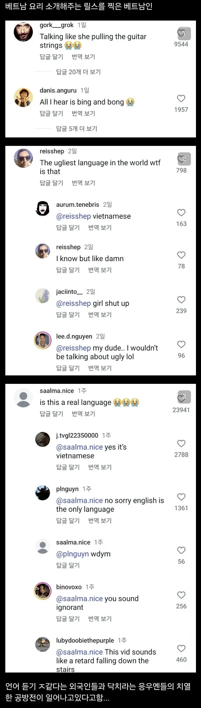

한국어도 듣기좋은 소리는 아닌데 재넨 진짜 저게 의사소통이 가능한가 싶음
배그에서 병신한명이 병신짓했다고 국가자체를 조롱해도되는 정당성이 생기는게아닌데 참..
서양쪽 외국인들이 아시아사람보면 눈찢고 친챙총하는거랑 근본적으로 뭐가 다른건가싶다
걍 너무 당연하게 동남아권 국가 및 민족들에 대한 차별이 만연하게 별일 아닌것처럼 이뤄지고있음.. 나 아내가 베트남계 미국인인데 이런거보면 참..;;
팩트는 동남아 애들이 동북아 상대로 눈 찢는다는 거임
인터넷에서는 동남아가 한국혐오 더 심할껄?
우리나라에서 동남아 비하컨텐츠 메인으로 삼는 틱톡커 있음? 쟤들은 일본처럼 혐한이 컨텐츠 주류 항목으로 있는 애들이야
그게 대체 무슨 상관인데? 쟤들은 똥 퍼먹고 있으니까 우린 쪼금만 먹어도 된단 얘기야? 뭔 변명도 안되는 말을 하구있어
ㅋㅋ 냅둬라
범죄자의 그것처럼 사고방식자체가 다른 병신들임
인종차별걍 서로 하면 안되나?ㅋㅋ 니1그로가 동양인 눈찢으면 채찍질 묘사좀 해주면되고 그런거지 뭐 걍 서로 딜교하는게 좋다고 봄 어차피 못막는데
그 딜교하다가 누구하나 정색하면 총쏘는 세상이라 안됨 원래 친구끼리도 장난 적당히쳐야 하는 것 처럼
문제는 선을 정하는건데 가볍게 가게에 주문 안 받거나 채용이 안되거나 대학 경쟁률이 높아지거나 길거리에서 욕을 먹든 침을 뱉는게 있고
심해지면 지나가다가 주먹 맞고 성범죄 당하고 지갑 털려도 수사도 안 해주고
걍 허용을 하면 그 선을 정해도 점점 선 넘는 애들 나오고 그럼 애초에 해주면 안되는거여
베트남애랑 일해본적 있는데 베트남어로 뭐라 씨부릴때마다 깜짝 놀랐음
좆같은 목소리 좆같은 음색
그냥 사람이 모잘라보이더라 ㅋㅋ
물품 번호좀 불러달라니까 좆같은 발음으로 공빨빨이! 이래서 존나 현웃터진적도 있음
솔까 언어적으로 듣기 안좋은거 맞자나
와 막댓 ㅋㅋㅋ ㅈㄴ맵네
남의나라말인데 넘 심하지 않나 싶긴했는데, 재생하니 좀 많이 세긴하네.
여기도 성조 많아가지고 중국어 못지않게 시끄러움 ㅋㅋ
여담으로 동영상은 분보후에 라는 음식인데 맛있음..
중국어랑 비슷하게 들리네 ㅋ
불어나 베트남어나 나에겐 또이또이
붕슝봉슝흐엌웅슝크엉옹숑 이나
앵땅껑땅옹땅잉땅옹양 이나 그게 그거같은디
귀가 많이 안 좋으신듯
좆같긴하네 ㅋㅋㅋㅋ
😭😭 이표정이 졸라웃김ㅋㅋㅋ
서쪽지방 언어라네 와잎에게 물어보니
중국어보다 심함 진짜로
베트남 놀러가서 베트남사람끼리 말하는거 보면 걍 대화하는척하면서 가짜중국어 쓰는건가 의심됨
개인적으로는 중국어가 더 듣기 힘듬
듣기 개좆같긴하네
언어가 왜 저런식으로 발전한걸가 신기하네...
성조있는 언어가 호불호 쌔게 갈리긴해
인종차별 맞으니까
인정하고 당당하게 인종차별하면 됨
짜증내는 소리 같기는 해
베트남만이 아니라 근처 나라들도 좀 저러던데 남자들 목소리도 좀 이상하게 들림 근데 다른 나라 말시키면 저정도는 아니던데 걍 저 나라들 언어 특인 듯
아줌마들 모여서 수다 떨면 귀 떨어짐
반칙은 까도 언어는 까지말자.
우리말에 성조 없는게 얼마나 다행인지 ㅋㅋ